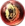
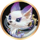
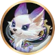
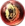

 Urso Gigante
 Lava
Lava
 Sacrifício
Sacrifício
 Coração de Leão
Coração de Leão
 Gelo
Gelo
 Eco
Eco
Este é um site feito por fã em homenagem ao Champions Legion!


 

 Urso Gigante
Lava
Sacrifício
Coração de Leão
Gelo
Eco
Como qualquer jungler, clawdia deve farmar a selva, dar bons ganks e garantir o abate de monstros épicos.
Saber usar ultimate é muito importante. A visão que essa habilidade proporciona é muito importante para o time, além de sua segunda ativação que praticamente garante um abate. Use-a perto de seus aliados para que eles lhe ajudem a abater o alvo.
Na fase de teamfights clawdia fica muito exposta ao usar a ultimate. Tente prender alvos que estejam um pouco mais isolados do resto do time para evitar mortes desnecessárias.
Ordem de compra dos itens: Inicie com a faca de caça( ), compre o capacete de patrulheiro(
), compre o capacete de patrulheiro( ). Compre as botas sônicas e feche o capacete de unicórnio após a arma de umbra. Pode comprar os demais itens na ordem. Vale ressaltar que itens de defesa devem ser comprados mediante a necessidade. Compre itens que sirvam para tankar o dano mais forte do time inimigo.
). Compre as botas sônicas e feche o capacete de unicórnio após a arma de umbra. Pode comprar os demais itens na ordem. Vale ressaltar que itens de defesa devem ser comprados mediante a necessidade. Compre itens que sirvam para tankar o dano mais forte do time inimigo.
Ordem de upgrade das habilidades: 3ª → 1ª → 2ª.